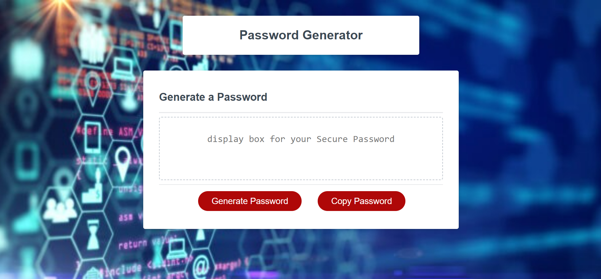

Let's build it together!

Leveraging today's technology
for tomorrow's competitive advantage
About Me
Experienced Information Technology (IT) professional with a diverse background of experiences as an Application Developer, Business Analyst (BA), Technical Analyst, Database Administrator, client relationship manager and software trainer. Extensive technical knowledge and excellent interpersonal skills enable me to liaise well with all levels of an organization. My capacity and passion for continual learning and a natural growth mindset drive business value.
- 10+ years as an application developer & 9+ years as a business analyst, with extensive experience in SDLC (Software Development Life Cycle): gathering & documenting requirements, designing & coding apps and UI’s, testing, deployment, & change requests / support
- Expert relationship manager, facilitating cross-functional teams of application developers, QA testers, clients, internal business partners, and senior management.
- Ability to present complex information in an understandable manner to all key stakeholders
- Experienced in application development and support in both Waterfall & Agile methodologies
- Excels as a liaison with users to provide training, resolve issues, assess user needs, and recommend changes to achieve optimum customer experience and increase product usage
- Documents requirements from various sources, including end users and stakeholders, for Business Requirements Document (BRD), Product Requirements (PRD), Market Requirements (MRD) Functional Specs (FSD), and Scope of Work (SOW) document
- Leads product issue management team to identify, document, escalate and resolve issues
- Conducts retrospective of issue resolution & identifies opportunities for improvement
- Experienced with relational databases, DB2, Oracle, SQL Server, JCL batch jobs, UI/GUI design, Jira, Confluence, Visio, defect tracking tools
- Creative, innovative and strategic thinker; works well with a team and independently
- Clear, accurate & thorough verbal and written communication skills to influence/create buy-in
My Projects:
Horiseon webpage:

CSS Snippet Cheatsheet:

Random Password Generator:
